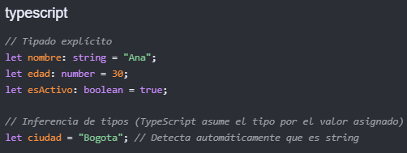
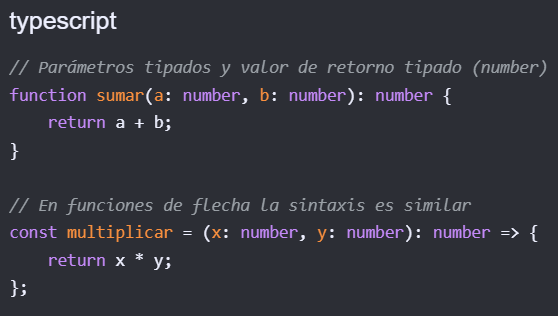

TypeScript es un lenguaje de programación desarrollado y mantenido por Microsoft. Es un superconjunto de JavaScript, lo que significa que cualquier código JavaScript válido también es código TypeScript válido. TypeScript agrega características adicionales al lenguaje, como tipado estático, interfaces y clases, lo que permite a los desarrolladores escribir código más robusto y fácil de mantener.
En TypeScript, puedes tipar variables de varias maneras:
Debemos colocar el tipo después de su nombre. TypeScript también puede inferir el tipo automáticamente si le asignas un valor inicial como vemos en el siguiente ejemplo:

Como se indica, si ponemos un numero TypeScript lo inferirá como un tipo 'number'. Y si ponemos un texto, lo inferirá como un tipo 'string'.
En TypeScript, puedes tipar funciones especificando los tipos de los parámetros y el tipo de retorno. Esto ayuda a garantizar que las funciones se utilicen correctamente y facilita la detección de errores en tiempo de compilación.
Se deben tipar tanto los parámetros de entrada como el valor de retorno de la función.

Angular CLI (Command Line Interface) es una herramienta de línea de comandos que facilita la creación, desarrollo y despliegue de aplicaciones Angular. Proporciona un conjunto de comandos para generar componentes, módulos, servicios y otros elementos de una aplicación Angular, así como para compilar y ejecutar la aplicación en entornos de desarrollo y producción. Normalmente sus comandos manejan el prefijo 'ng'.
npm install -g @angular/cli
ng version o ng -v
ng update
ng new nombre-del-proyecto
ng serve o ng server --open
ng build
ng config
ng test
ng e2e
Los Standalone Components en Angular son una característica que permite crear componentes independientes y reutilizables sin necesidad de declararlos en un módulo. Esto facilita la modularidad y la reutilización de componentes en diferentes partes de una aplicación Angular. Los Standalone Components pueden ser utilizados directamente en plantillas de otros componentes o módulos, lo que simplifica la estructura del proyecto y mejora la mantenibilidad del código.
La estructura de un proyecto Angular sigue una organización específica que facilita la gestión y mantenimiento del código. Los archivos principales se encuentran en la carpeta `src`, que contiene los componentes, servicios, módulos y otros recursos necesarios para el funcionamiento de la aplicación. (src/app), los archivos estáticos (src/assets), las configuraciones globales (angular.json) y las dependencias (package.json)